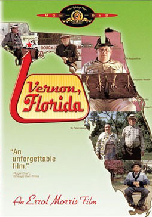

Errol Morris
1981
55 minutes
TITLE: Vernon, Florida TEXT PLACEHOLDER 108
This is an Errol Morris documentary of sorts. It actually feels like a Frankenstein's Monster of a documentary, stitched together from parts left on the cutting room floor of a grander effort, which has its own charm. The backstory, which is never really explained, is that he was trying to do a proper documentary about a town in Florida which was notorious for being the home of a lot of workers who had a bizarre cottage industry going where they were getting deliberately injured for insurance payouts, intentionally losing fingers and limbs for particularly large settlements. The actual documentary never got made, allegedly due to some combination of death threats and lawsuits by people who did not want this exposed. So instead we were left with a film about the "local color" from the sort of place this sort of thing might occur.
Needless to say there are a lot of unusual characters to go around. The turkey guy, who really seems to enjoy shooting turkeys, is particularly memorable. Turkeys have been a meaningful part of your life at multiple points in your life. When you were a child you drew a lot of cartoon turkeys, with which you populated umerous childhood creative projects any time you were called upon to draw cartoons or illustrations.
You had a particular character, Rheinhardt the Turkey Prince, who got to be the main character in a book when your third grade teacher made the more advanced reading students write and illustrate their own children's books in collaboration with the art teacher. (This slim volume may still exist somewhere in your mother's archives.)
When you and your belated wife moved to the east coast, you started always celebrating Thanksgiving at home, and you always had a turkey or at least a cornish hen, no matter how inadequate your kitchen and oven seemed for the task.
And when you were cruelly tossed back into the dating scene upon being widowed, you and a close female friend on the west coast (and thus a few hours behind you) initiated a sort of ritual called a "giblet check" whenever you were out on a date or up to some other activity that seemed ominous--the grim joke being that you were going to wake up in a bathtub full of ice without one of your kidneys. She would insist that you text her at some point during the evening to let her know that your giblets were still intact and likely to stay that way. Knowing your dating history before your wife, she had diminished confidence that this would be the case. You appreciated having someone know where you were and what you were doing in return for getting the juicy details. And you certainly never hesitated to send her a message that she should check in on you later if things were looking hazardous for any reason, romantic or otherwise. This comes up more than it probably should.
Time to choose something different: